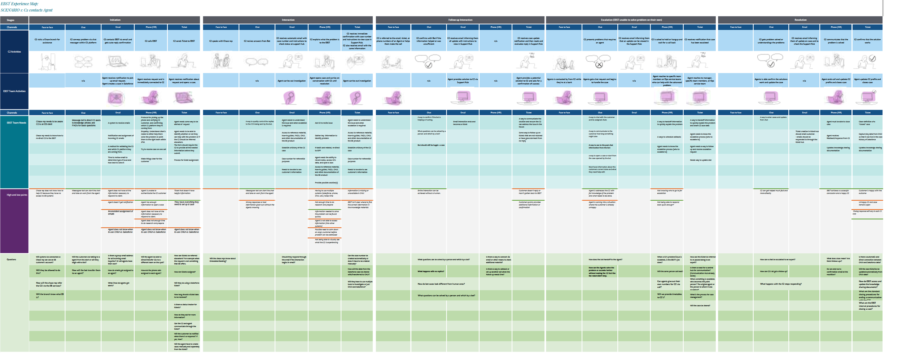
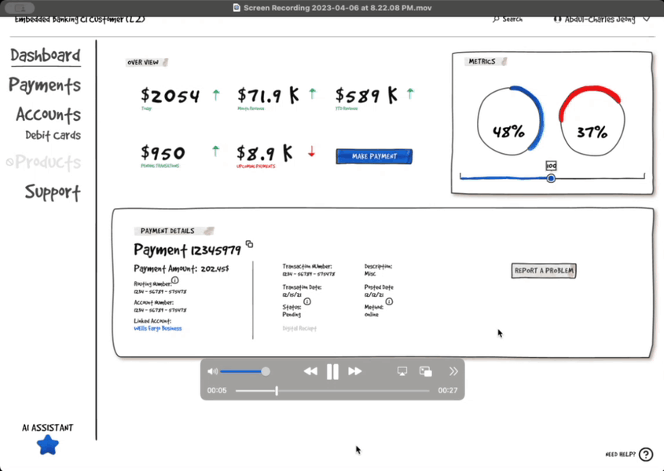
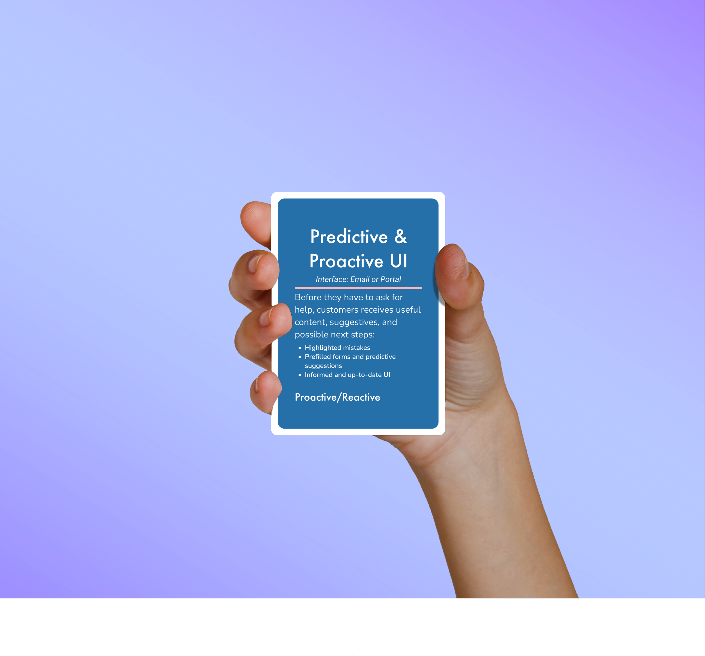
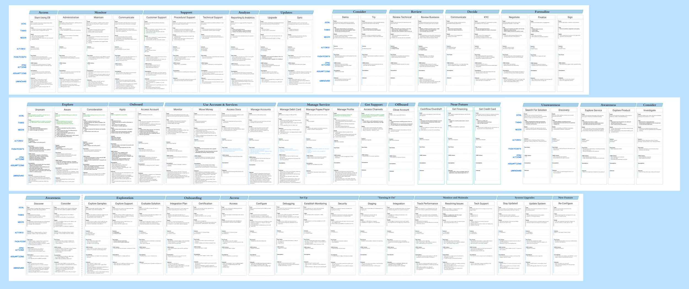
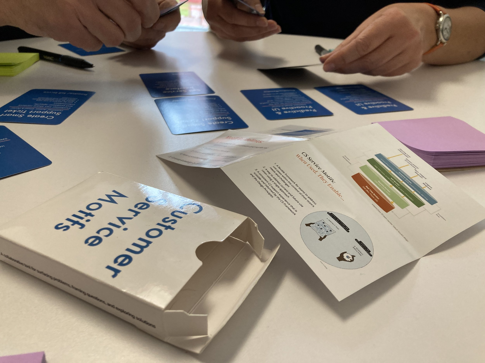

Summary & End Results
BACKGROUND
JPMC’s engineering team needed help building the Customer Service and Support Systems for a new banking service called Embedded Banking. Working with 3 other designers, I was asked to make a scalable way to systematically address any customer pain points.
OUTCOME
To research and discover exactly what tools would serve both the user and team’s needs, we proceeded with 20 interviews with stakeholders, 6 co-create workshops with engineers/product, and 5 user testing sessions.
These enabled us to:
- Document the current state, using service blueprints for the client, the customer, the developer, and customer support
- Test and refine our strategy, validating our designs for a scalable and intuitive customer experience
From this we synthesized foundational frameworks, models for adaptable interactions, and tools for scalable implementation. These final outcomes took the form of:
- Maps for present and future states
- Prototype of MVP designed to preemptively address user painpoints
- A strategy and innovative design tools for continuous adaption





Embedded Banking is under an NDA.
Reach out to hear the full case study.